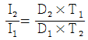
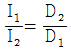
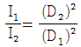
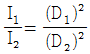
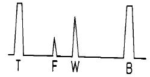
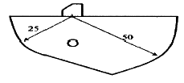
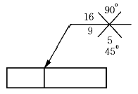

초음파비파괴검사기능사 (2002-10-06 기출문제)
1과목: 초음파탐상시험법
1. 방사선투과시험에서 필름 현상온도를 15.5℃에서 24℃로 상승시킴에 따라서 현상시간은 어떻게 해야 하는가?
- 15.5℃ 때보다 시간을 짧게 한다.
- 15.5℃ 때보다 시간을 길게 한다.
- 항상 5분으로 한다.
- 현상온도와 현상시간은 서로 무관한 함수이므로 15.5℃ 때와 같은 시간으로 한다.
(정답률: 77%)

2. 종파속도가 6,000m/sec이고 주파수가 5MHz인 경우 파장은 얼마인가?
- 1.2 m
- 1.2 cm
- 1.2 mm
- 0.12 mm
(정답률: 60%)
3. 탐촉자에서 압전재료가 갖는 특성은?
- 전기적 에너지만을 기계적 에너지로 변환한다.
- 전기적 에너지만을 전기적 에너지로 변환한다.
- 전기적 에너지를 기계적 에너지로, 기계적 에너지를 전기적 에너지로 변환한다
- 모드 변환 효율이 좋다.
(정답률: 85%)
4. 알루미늄 검사체의 수직탐상시 초음파빔의 분산각을 35°로 할 때 탐촉자 직경(mm)은 얼마로 해야 하는가? (단, 사용주파수는 1MHz이며, 알루미늄에서의 초음파속도는 6.3×105 cm/sec, sin35° 는 0.57 이다.)
- 11.5
- 13.4
- 25.2
- 27.7
(정답률: 39%)
5. 탐상기 중에서 음극에서 나온 전자 빔이 관의 앞면에 있는 형광스크린에 상을 재상시킬 수 있도록 만든 전자관을 무엇이라 하는가?
- 증폭관
- 펄스발생관
- 소임관
- 음극선관
(정답률: 알수없음)
6. 초음파탐상시험에서 깊이가 다른 두개의 결함을 분리하여검출하고자 한다. 다음 중 어느 방법이 가장 효과적인가?
- 주파수를 줄인다.
- 초기 펄스의 크기를 증가시킨다.
- 주파수를 줄이고 초기 펄스를 증가시킨다.
- 펄스의 길이를 짧게 한다.
(정답률: 알수없음)
7. 탐촉자의 지향각은?
- 파장에 비례한다.
- 초음파 속도에 반비례한다.
- 주파수에 비례한다.
- 수정체 크기에 비례한다.
(정답률: 55%)
8. 초음파탐상시험시 탐촉자에 음향렌즈를 부착시키면 어떤 결과가 나타나는가?
- 감도와 분해능은 높아지나 침투력은 작아진다.
- 감도와 침투력은 커지나 분해능이 나빠진다.
- 침투력은 커지나 감도와 분해능이 저하한다.
- 침투력과 분해능은 커지나 감도는 나빠진다.
(정답률: 알수없음)
9. 세 개이상으로 분리된 수정을 가진 탐촉자를 무엇이라 하며, 주로 어디에 적용하는가?
- 이중 탐촉자, 개재물 검사
- 샌드위치 탐촉자, 봉(棒) 검사
- 모자이크 탐촉자, 판재 검사
- 다중 탐촉자, 파이프 용접물 검사
(정답률: 34%)
10. 탐촉자 중 수정 진동자의 특징은?
- 사용수명이 짧다.
- 고온사용이 불가능하다.
- 광범위하게 사용된다.
- 전기적으로 불안정하다.
(정답률: 50%)
11. 탐촉자를 구성하고 있는 요소중 압전물질 뒷쪽에 위치한 흡수재(backing material)의 기능으로 옳지 않은 것은?
- 흡수재는 압전물질의 배면으로 반사되는 초음파 에너지를 흡수한다.
- 흡수재는 크리스탈의 댐핑(Damping)양을 적절히 조정해 준다.
- 흡수재는 되돌아 반사해 오는 펄스를 전기적 신호로 전환시켜 준다.
- 흡수재는 압전물질이 요동하지 못하도록 고정시켜 주는 역할을 한다.
(정답률: 60%)
12. 초음파탐상시 게이트 폭(gate width)을 조절하면 어떤 결과가 나타나는가?
- 게이트의 기점이 결정된다.
- 펄스폭이 조절된다.
- 동작범위가 조절된다.
- 브라운관의 폭이 조절된다.
(정답률: 36%)
13. 경사각 탐상시 직사법으로 할 때 결함의 깊이를 구하는 식은?
- 빔(beam)행정거리 × cot(굴절각)
- 빔(beam)행정거리 × cos(입사각)
- 빔(beam)행정거리 × tan(입사각)
- 빔(beam)행정거리 × cos(굴절각)
(정답률: 42%)
14. 다음 중 바퀴형(Wheel) 탐촉자로 탐상할 수 없는 방법은?
- 수직 탐상
- 경사각 탐상
- 표면파 탐상
- 쉐도우 탐상
(정답률: 알수없음)
15. 공진 탐상에 있어서 탐촉자의 공진 주파수는?
- 사용하는 탐상주파수보다 높아야 한다.
- 사용하는 탐상주파수보다 낮아야 한다.
- 사용하는 탐상주파수와 동일해야 한다.
- 시편과 동일해야 한다.
(정답률: 42%)
16. 시험체의 두께를 측정할 수 있는 초음파탐상시험으로 묶여진 것은?
- 펄스 반사법, 공진법
- 펄스 반사법, 관통법
- 연속파법, 투과법
- 표면파법, 공명법
(정답률: 86%)
17. 20mm 두께의 맞대기 용접부를 굴절각 70° 의 탐촉자로 탐상하여 스크린상에 75mm거리에서 결함지시가 나타났다. 이 결함의 깊이는?
- 10.5mm
- 12.2mm
- 14.3mm
- 16.8mm
(정답률: 34%)
18. 초음파탐상시험시 결함의 평면을 파악하기 위해서는 어느 표시방식이 적절하겠는가?
- A 스캔표시
- B 스캔표시
- C 스캔표시
- 디지탈 표시
(정답률: 80%)
19. 용금(熔金)의 두 흐름이 만나서 완전히 용융되지 않아 생긴 불완전한 접합부(결함의 일종)를 무엇이라고 하는가?
- 블로 홀(blow hole)
- 크로즈 오버(close over)
- 콜드 셧(cold shut)
- 코어 로드(core rod)
(정답률: 47%)
20. 침투탐상검사에 대한 특성 설명으로 틀린 것은?
- 불연속 또는 균열의 깊이를 정확하게 측정할 수 있는 방법이다.
- 큰 부품의 일부분씩을 시험할 수 있는 방법이다.
- 표면의 개구(開口) 결함을 찾는데 쓰이는 방법이다.
- 여러가지 침투 물질을 사용함에 따라 민감도가 좋을 수도, 나쁠 수도 있다.
(정답률: 82%)
2과목: 초음파탐상관련규격
21. 방사선의 강도와 거리와의 관계를 표시한 것이다. 올바른 것은? (단, T : 시간, I : 강도, D : 거리)




(정답률: 24%)
22. 전기적 에너지와 기계적 에너지 사이에서 에너지 변환을 하는 진동자는 어떤 성질 때문인가?
- 압전효과
- 감쇠효과
- 굴절효과
- 산란효과
(정답률: 알수없음)
23. 다음 중 방사선투과검사에서 판별하기 가장 어려운 결함은?
- 결함의 크기
- 결함의 종류
- 결함의 깊이
- 결함의 수
(정답률: 60%)
24. 음향임피던스에 대한 설명 중 틀린 것은?
- 재질에 따라 값이 다르다.
- 음파의 진행을 방해한다.
- 임피던스차가 클수록 계면에서 더 많이 반사한다.
- 속도와 부피의 곱으로 구한다.
(정답률: 55%)
25. 강구조물의 파괴에 대해 기술한 것으로 올바른 것은?
- 용접결함이 존재하면 그곳에 높은 온도영역이 발생하고 전성 파괴사고의 원인이 된다.
- 결함부에 생기는 응력집중은 구조물의 강도를 저하시킨다.
- 응력부식 균열은 용접후 일정 시간이 경과후 일어나는 수소에 의한 균열이다.
- 지연 균열은 반복 하중하에서 일정 반복회수 후에 생긴다.
(정답률: 31%)
26. KS B ⑤50의 비파괴시험 용어 정의 중 탠덤 탐상법의 설명으로 올바른 것은?
- 경사각 탐촉자 2개를 앞뒤로 배치하고 한쪽을 송신용으로, 다른 쪽을 수신용으로 해서 사용하는 방법
- 탐촉자를 용접선에 평행하게 이동시키는 주사 방법
- 탐촉자를 용접선에 직각 방향으로 이동시키는 주사방법
- 탐촉자를 회전시켜 초음파 빔의 방향을 변화시켜 주는 주사 방법
(정답률: 67%)
27. KS B 0896의 경사각탐상에서 75㎜이상의 강용접부를 2MHz 20×20㎜인 탐촉자를 사용하여 탐상할 때 흠지시길이 측정방법으로 올바르게 설명한 것은?
- 에코높이의 20%를 초과하는 범위의 탐촉자 이동거리를 측정한다.
- 에코높이의 75%를 초과하는 범위의 탐촉자 이동거리를 측정한다.
- 최대 에코높이가 L선을 초과하는 범위의 탐촉자 이동거리를 측정한다.
- 최대 에코높이의 1/2를 초과하는 범위의 탐촉자 이동거리를 측정한다.
(정답률: 43%)
28. KS B 0896에서 강용접부의 초음파탐상시험 결과의 분류에 관한 설명중 틀린 것은?
- 판두께가 다르면 같은 크기의 흠이라도 영역에 따라 흠의 분류가 달라진다.
- 2 방향에서 탐상한 경우에 동일한 흠의 분류가 다를 때는 상위 분류를 채용한다.
- 판두께 18mm이하, 탐상영역이 M검출 레벨의 경우 Ⅲ영역에서의 결과의 분류시 흠 크기 6mm이하는 1류로 한다.
- 흠의 분류시 3류를 넘는 것은 4류로 한다.
(정답률: 40%)
29. KS B 0817의 초음파탐상시험 방법 통칙에서 정기점검이라 함은 1년에 몇 회 이상 정기적으로 행함을 말하는가?
- 1회
- 2회
- 3회
- 4회
(정답률: 알수없음)
30. KS B 0896에 의한 강용접부의 초음파탐상시험시 등급 분류를 위한 설명으로 옳지 못한 것은?
- 경사평행주사로 검출된 흠의 등급분류는 기존 등급에 한급 하위의 급을 채용한다.
- 동일 깊이에 있어서 흠과 흠의 간격이 큰 쪽의 흠의 지시 길이보다 짧은 경우는 동일 흠군으로 본다.
- 흠과 흠의 간격이 양자의 흠의 지시길이중 큰쪽의 흠의 지시길이보다 긴 경우는 각각 독립한 흠으로 본다.
- 분기주사 및 용접선 위 주사에 의한 시험 결과의 분류는 당사자 사이의 협의에 따르는 것이 좋다.
(정답률: 56%)
31. KS B ⑤35에 의한 초음파 탐촉자의 표시기호로 경사각에 해당되는 기호는?
- A
- N
- S
- W
(정답률: 80%)
32. KS B 0831에서 초음파 탐상용 G형 표준시험편의 검정조건 및 방법 설명으로 맞는 것은?
- 주파수는 2(또는 2.25), 5 및 10MHz
- 리젝션의 감도는 0 또는 ON으로 한다.
- 반사원은 R100면으로 한다.
- 검정용 기준편에만 1회 실시한다.
(정답률: 72%)
33. KS D 0233 압력용기용 강판의 초음파탐상검사의 적용 범위 설명 중 맞는 것은?
- 두께 4mm 이상의 고품질 킬드 강판에 대하여 적용
- 두께 6mm 이상의 고품질 킬드 강판에 대하여 적용
- 두께 10mm 이상의 저탄소강 강판에 대하여 적용
- 두께 12mm 이상의 고압 탄소강판에 대하여 적용
(정답률: 75%)
34. 그림과 같이 초음파 탐상장치의 CRT에 나타난 에코의 기본 기호를 바르게 나타낸 것은?

- T : 밑면에코
- F : 표면에코
- W : 측면에코
- B : 송신펄스
(정답률: 57%)
35. 강용접부에 열처리가 있을 때 한국산업규격에 따라 가.부의 판정을 위한 초음파탐상시험의 시기로 맞는 것은?
- 최종 열처리 전
- 용접후 수시간 지난 후
- 최종 열처리 후
- 용접후 바로
(정답률: 80%)
36. 그림에 표시한 시험편을 사용하여 시간축을 조정하는 경우 R50면을 향하여 음파를 전파하였을 때 첫 번째로 나타나는 에코는?

- 50mm
- 75mm
- 100mm
- 25mm
(정답률: 69%)
37. KS B 0896에 따른 곡률반지름 200mm인 원둘레 이음의 용접부 초음파탐상시험에 관한 사항을 설명한 것이다. 이 중 틀린 것은?
- 입사점 측정은 STB-A1 시험편을 이용한다.
- 에코높이 구분선 작성은 STB-A2 시험편을 이용한다.
- 측정범위 조정은 STB-A3 시험편을 이용할 수 있다.
- 탐상감도의 조정은 RB-A8 시험편을 이용할 수 있다.
(정답률: 31%)
38. KS B 0896 강용접부의 초음파탐상 시험방법에 따른 에코 높이 구분선 작성에 대한 설명이다. 다음 중 맞는 것은?
- A2형계 표준시험편을 사용하여 에코높이 구분선을 작성하는 경우에는 ø2×2mm의 표준구멍을 사용한다.
- 에코높이 구분선은 원칙적으로 실제로 사용하는 탐촉자가 아닌 것으로 사용하여 작성한다.
- A2형계 표준시험편을 사용하여 에코높이 구분선을 작성하는 경우에는 ø4×4mm의 표준구멍을 사용한다.
- A1형계 표준시험편을 사용하여 에코높이 구분선을 작성하는 경우에는 ø4×4mm의 표준구멍을 사용한다.
(정답률: 62%)
39. KS B 0896 강용접부의 초음파탐상 시험방법에 따라 원둘레이음 용접부를 탐상할 경우, 탐상방법에 대한 설명으로 맞는 것은?
- 클래드강판의 경우, 탐상면은 클래드강 쪽으로 한다.
- 판 두께가 100mm이하인 경우는 탐상면이 바깥면(볼록쪽)이다.
- 판 두께가 100mm이하인 경우는 탐상면이 내· 외면(요철면)이다.
- 판 두께가 100mm를 넘는 경우는 탐상면이 바깥면(볼록쪽)이다.
(정답률: 64%)
40. KS B 0896 강용접부의 초음파탐상 시험방법에 따라 2방향(A방향, B방향)에서 탐상한 결과 동일한 흠이 A방향에서는 2류로, B방향에서는 3류로 분류되었다. 다음 중 탐상결과 흠의 분류로 맞는 것은?
- 1류
- 2류
- 3류
- 4류
(정답률: 75%)
3과목: 금속재료일반 및 용접일반
41. KS B ⑤34 초음파탐상장치의 성능 측정방법에 따라 수직탐상을 할 경우 수직탐상의 근거리 분해능 측정에 사용되는 시험편은?
- RB-RA형
- RB-RB형
- RB-RC형
- STB-A형
(정답률: 80%)
42. 소성가공한 금속재료를 고온으로 가열할 때 일어나는 현상이 아닌 것은?
- 내부 응력제거
- 재결정
- 경도의 증가
- 결정입자의 성장
(정답률: 알수없음)
43. 고온에서 Ni을 가장 쉽게 산화시킬 수 있는 가스는?
- CO2 가스
- H2 가스
- CO 가스
- SO2 가스
(정답률: 알수없음)
44. 동일한 조건에서 열전도율이 가장 큰 것은?
- Ag
- Au
- Cu
- Mg
(정답률: 60%)
45. 순철의 동소변태에 해당되는 온도는?
- 약 210℃
- 약 700℃
- 약 912℃
- 약 1600℃
(정답률: 80%)
46. 상온에서 순철(α철)의 결정 격자는?
- 면심입방격자
- 조밀육방격자
- 체심입방격자
- 정방격자
(정답률: 64%)
47. γ철을 맞게 표현한 것은?
- 페라이트
- 시멘타이트
- 오스테나이트
- 솔바이트
(정답률: 47%)
48. 철-탄소계의 평형 상태도에서 공정점의 탄소량(%)은?
- 0.2
- 0.8
- 1.5
- 4.3
(정답률: 37%)
49. 흑연화를 목적으로 백선을 열처리하는 것은?
- 흑심가단주철
- 칠드주철
- 보통주철
- 합금주철
(정답률: 알수없음)
50. 주철에서 흑연구상화처리시 첨가하는 금속은?
- Mg, Ca
- Pb, Sn
- Cu, Ag
- Zn, Mn
(정답률: 64%)
51. 다음의 표면경화법 중 금속 시멘테이션(cementation)법이 아닌 것은?
- 크로마이징(chromizing)
- 질화법(nitriding)
- 칼로라이징(calorizing)
- 보로나이징(boronizing)
(정답률: 알수없음)
52. 공업용 재료에 사용되는 재료 중에서 비중과 강도비가 크고 내식성 및 내열성도 좋아 항공기, 로켓 재료로 쓰이는 합금으로 비중이 약 4.5인 금속은?
- Ti
- Mg
- Aℓ
- Fe
(정답률: 65%)
53. 은백색으로 전연성이 좋아 박(foil)이나 가는 선으로 사용되는 금속으로 비중이 약 10.5 인 금속은?
- 금
- 은
- 철
- 황
(정답률: 75%)
54. 그림과 같은 용접기호 해독으로 올바른 것은?

- 화살표쪽 홈의 깊이는 16mm, 45° 홈인 X형 용접이다.
- 화살표 반대쪽의 홈의 깊이는 9mm, 90° 홈인 X형 용접이다.
- 화살표쪽의 홈은 45°, 홈의 깊이는 5mm인 X형 용접이다.
- 화살표쪽의 홈은 45°, 루트 간격 5mm 인 X형 용접이다.
(정답률: 46%)
55. 점용접 조건의 3요소가 아닌 것은?
- 전류의 세기
- 통전시간
- 너켓(nugget)
- 가압력
(정답률: 알수없음)
56. 15 ℃ 15기압하에서 아세톤 30ℓ 가 들어있는 아세틸렌 용기에 용해된 최대 아세틸렌의 양은?
- 30ℓ
- 450ℓ
- 6750ℓ
- 11250ℓ
(정답률: 알수없음)
57. 다음 중 인터넷을 사용할 때 영문으로 표현된 도메인이름을 컴퓨터가 가지고 있는 IP주소로 변환시켜 주는 것은?
- DTS
- DNT
- DNS
- DNP
(정답률: 34%)
58. 컴퓨터의 하드웨어 중 임시 데이터 저장 능력을 가진 휘발성 기억 장치는?
- RAM
- ROM
- HDD
- FDD
(정답률: 28%)
59. PC 윈도우의 보조 프로그램 중 녹음기에서 지원하는 파일은?
- *.AVI
- *.MID
- *.WAV
- *.MP3
(정답률: 17%)
60. 컴퓨터와 단말기 사이, 또는 두 컴퓨터 사이에 데이터를 주고받는데 적용되는 일련의 규약을 가리키는 것은?
- 토폴로지
- 대여폭
- 프로토콜
- 브리지
(정답률: 알수없음)